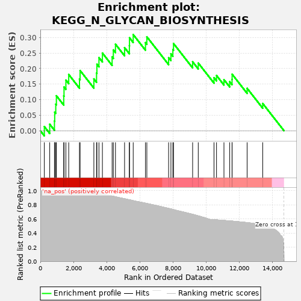
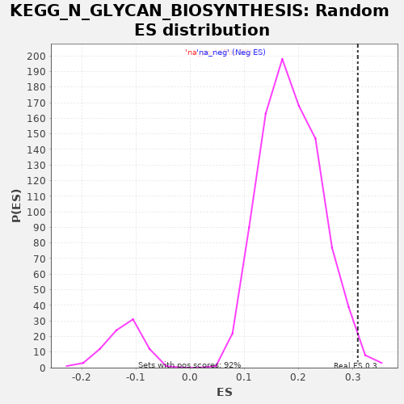

| | | Dataset | drug_embeddings_gsea |
| Phenotype | NoPhenotypeAvailable |
| Upregulated in class | na_pos |
| GeneSet | KEGG_N_GLYCAN_BIOSYNTHESIS |
| Enrichment Score (ES) | 0.30933997 |
| Normalized Enrichment Score (NES) | 1.6583704 |
| Nominal p-value | 0.008733625 |
| FDR q-value | 0.1927465 |
| FWER p-Value | 0.924 |
Table: GSEA Results Summary

Fig 1: Enrichment plot: KEGG_N_GLYCAN_BIOSYNTHESIS
Profile of the Running ES Score & Positions of GeneSet Members on the Rank Ordered List
| PROBE | GENE SYMBOL | GENE_TITLE | RANK IN GENE LIST | RANK METRIC SCORE | RUNNING ES | CORE ENRICHMENT | | 1 | MGAT5 | | | 240 | 1.000 | 0.0133 | Yes |
| 2 | ALG6 | | | 566 | 1.000 | 0.0209 | Yes |
| 3 | ALG8 | | | 851 | 1.000 | 0.0312 | Yes |
| 4 | DPAGT1 | | | 867 | 1.000 | 0.0599 | Yes |
| 5 | DPM2 | | | 931 | 1.000 | 0.0853 | Yes |
| 6 | ALG13 | | | 969 | 1.000 | 0.1125 | Yes |
| 7 | MAN1A1 | | | 1412 | 1.000 | 0.1121 | Yes |
| 8 | MGAT4B | | | 1429 | 1.000 | 0.1407 | Yes |
| 9 | DPM3 | | | 1542 | 1.000 | 0.1628 | Yes |
| 10 | ALG3 | | | 1712 | 1.000 | 0.1810 | Yes |
| 11 | MAN1B1 | | | 2361 | 1.000 | 0.1665 | Yes |
| 12 | ALG14 | | | 2398 | 1.000 | 0.1937 | Yes |
| 13 | MGAT2 | | | 3229 | 1.000 | 0.1668 | Yes |
| 14 | RFT1 | | | 3391 | 1.000 | 0.1856 | Yes |
| 15 | ALG5 | | | 3413 | 1.000 | 0.2138 | Yes |
| 16 | MGAT1 | | | 3536 | 1.000 | 0.2352 | Yes |
| 17 | MOGS | | | 3744 | 0.970 | 0.2499 | Yes |
| 18 | STT3B | | | 4330 | 0.924 | 0.2375 | Yes |
| 19 | ALG9 | | | 4404 | 0.921 | 0.2599 | Yes |
| 20 | MAN1A2 | | | 4532 | 0.914 | 0.2784 | Yes |
| 21 | STT3A | | | 5081 | 0.887 | 0.2673 | Yes |
| 22 | DOLPP1 | | | 5371 | 0.872 | 0.2735 | Yes |
| 23 | ALG1 | | | 5378 | 0.871 | 0.2990 | Yes |
| 24 | TUSC3 | | | 5602 | 0.860 | 0.3093 | Yes |
| 25 | RPN2 | | | 6341 | 0.824 | 0.2835 | No |
| 26 | DPM1 | | | 6425 | 0.819 | 0.3022 | No |
| 27 | MGAT5B | | | 7738 | 0.749 | 0.2349 | No |
| 28 | B4GALT3 | | | 7877 | 0.742 | 0.2475 | No |
| 29 | B4GALT1 | | | 7994 | 0.734 | 0.2614 | No |
| 30 | MAN2A1 | | | 8034 | 0.732 | 0.2805 | No |
| 31 | FUT8 | | | 9186 | 0.665 | 0.2218 | No |
| 32 | RPN1 | | | 9526 | 0.643 | 0.2178 | No |
| 33 | ALG10 | | | 10476 | 0.589 | 0.1705 | No |
| 34 | DDOST | | | 10627 | 0.587 | 0.1777 | No |
| 35 | MAN2A2 | | | 11076 | 0.579 | 0.1644 | No |
| 36 | GANAB | | | 11423 | 0.572 | 0.1578 | No |
| 37 | ST6GAL1 | | | 11564 | 0.570 | 0.1651 | No |
| 38 | ALG2 | | | 11569 | 0.569 | 0.1818 | No |
| 39 | ALG11 | | | 12474 | 0.548 | 0.1364 | No |
| 40 | DAD1 | | | 13414 | 0.513 | 0.0876 | No |
Table: GSEA details [plain text format]

Fig 2: KEGG_N_GLYCAN_BIOSYNTHESIS: Random ES distribution
Gene set null distribution of ES for KEGG_N_GLYCAN_BIOSYNTHESIS